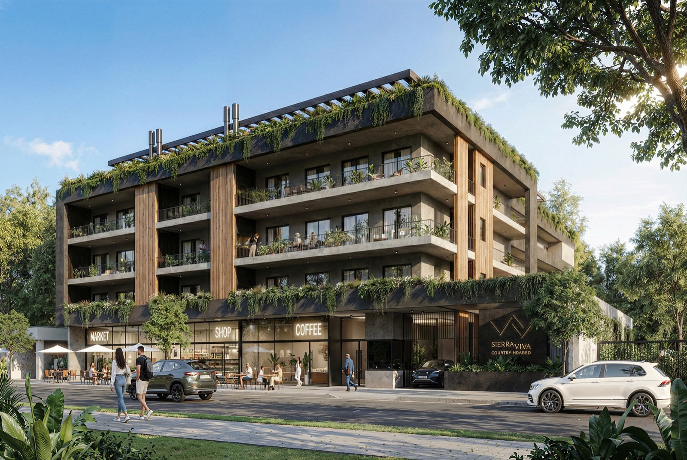
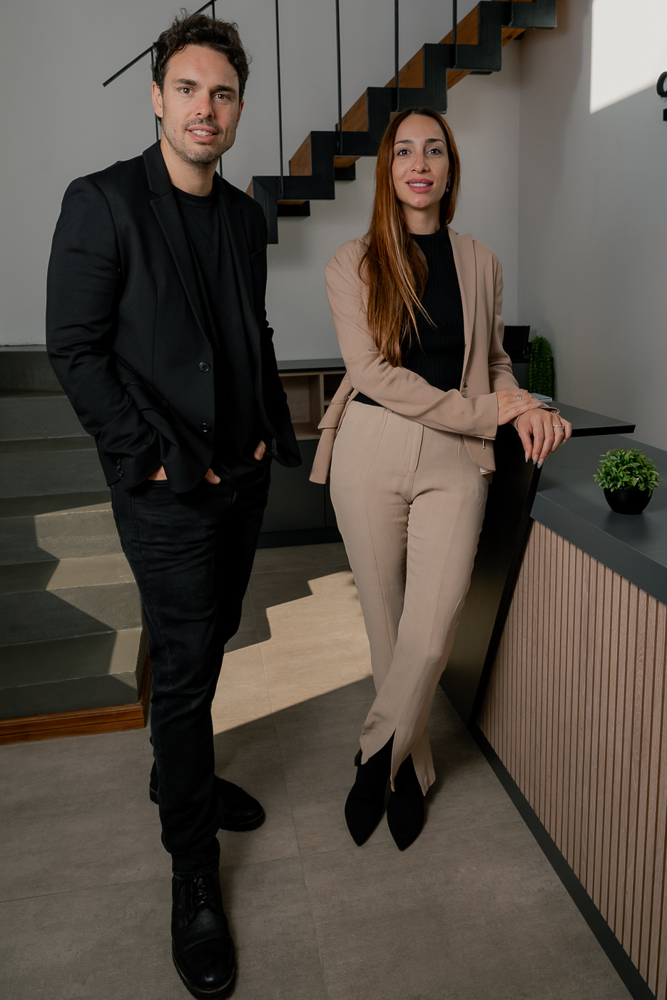

Pensar la ciudad que viene.
Tandil atraviesa uno de los procesos de crecimiento urbano más importantes de su historia. Miles de familias eligen la ciudad por su naturaleza, seguridad, calidad de vida y oportunidades.
Nuestra misión es acompañar ese crecimiento desarrollando proyectos innovadores que eleven el estándar de cómo se vive, se invierte y se disfruta la ciudad.
No seguimos tendencias.
Buscamos crearlas.
Proyectos
Donde nacen nuevas historias

SierraViva
Ver proyecto →Próximamente
Próximos
Proyectos
SierraViva · Country Urbano
Estamos creando el primer country urbano en Tandil
Un desarrollo sin precedentes dentro del radio urbano. 2.400 m² de vida con amenities de primer nivel, en el corazón de la ciudad.
Constitución 835
Tandil · 2026
- Arquitectura
- Área de Piscina
- SUM & Parrilla




Nosotros
Una visión compartida.
Cardinale Pastura es la unión de dos familias profundamente vinculadas al desarrollo de Tandil.
Deby Cardinale aporta su experiencia en el mercado inmobiliario, el conocimiento legal y una mirada cercana sobre las necesidades reales de quienes buscan un hogar o una inversión.
Nicolás Pastura aporta visión estratégica, creatividad y una fuerte vocación por diseñar proyectos que generen impacto urbano y valor a largo plazo.
Juntos impulsan desarrollos donde el diseño, la funcionalidad y la experiencia de las personas son el centro de cada decisión.